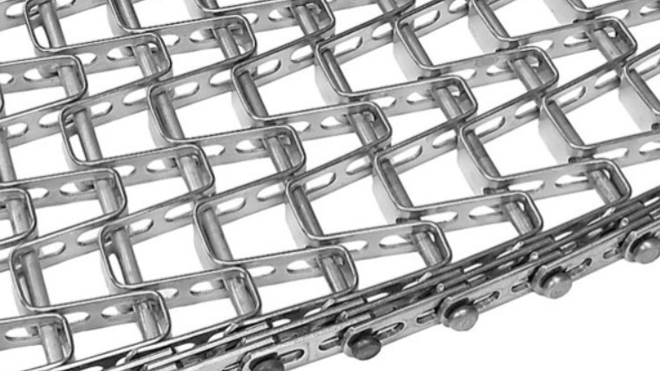

Spiral Drive Systems
The first step in specifying a spiral belt is identifying how the spiral drives the belt. The drive system defines which belt construction can be used, which edge carries the tension and which details must be measured. Spiral systems generally fall into four groups.
A rotating drum drives the inner edge of the belt by friction against its vertical bars. The drum turns slightly faster than the belt (overdrive). This page covers Omni-Grid and Omni-Flex metal belts for this system.
The drum bars engage the inner edge of the belt directly, without relying on friction. Metal belts for this system are similar to friction-drive belts, with an added tab on the inner edge that engages the drum bars.
There is no central drum. The belt has side plates that rest on the tier below, forming a self-supporting stack. The belt is driven from the bottom tier. This page covers metal self-stacking belts.
There is no central drum. A tower of sprockets or gears outside the spiral drives the belt through its outer edge. Metal belts for this system have an engaging mechanism on the outer links.
Tools and Preparation
- Caliper, outside micrometer and steel tape measure in millimeters and inches
- Camera for photos with a ruler placed next to the belt
- Take measurements with the spiral stopped, locked out and with safety procedures applied
- Measure on a straight section of the belt, fully extended, such as the infeed, outfeed or return path
- Repeat each measurement at least three times, away from splices and repaired sections
Measurements Common to All Spiral Belts
- Overall belt width: from the end of the rod on one edge to the end of the rod on the other edge, on a straight section.
- Usable width: the width available for product, measured between the inner faces of the edge links or side plates.
- Pitch: center-to-center distance between consecutive rods. Measure over 10 pitches with the belt fully extended and divide by 10.
- Rod diameter: with a micrometer, in an area without wear.
- Belt height: height of the edge links or side plates, from the bottom face to the top face.
- Turn direction: left, right or both, and which edge is the inner edge in the spiral.
- Total belt length: in meters or in number of pitches, including the take-up allowance.
- Material: stainless steel grade of rods, links and overlay, according to the original belt records.
Turn ratio = inside turn radius ÷ overall belt width
In a spiral with a drum, the inside turn radius is half the drum diameter measured at the bars. Each belt construction has a minimum turn ratio, so this value must be confirmed before choosing the replacement belt.
Omni-Grid Belts
The Omni-Grid is a rod-and-link belt. Transverse rods are joined at the edges by formed links, and a woven wire mesh overlay is usually fitted over the rods to support the product. The links have slots that allow the inner edge to collapse in the turns, while the outer edge stays extended. It is one of the most common belts for friction drum spirals.
How to recognize it
- Round transverse rods with formed ends at the edges
- Formed links on both edges, sometimes with an additional center link
- Woven wire spiral mesh overlay wrapped around the rods
- In the turns, the rods come closer together on the inner edge
Common pitches and rod diameters
| Nominal pitch | Nominal pitch (mm) | Rod diameter |
|---|---|---|
| 3/4" | 19.1 mm | 4.9 mm |
| 1" | 25.4 mm | 4.9 mm |
| 1.2" | 30.5 mm | 6.0 mm |
| 1.5" | 38.1 mm | 6.0 mm |
The pitch name is nominal: the pitch measured in the field may be slightly larger than the nominal value, as in 1" belts that measure about 27.4 mm. Use the measured pitch together with the rod diameter to identify the series: a 4.9 mm rod indicates the 3/4" or 1" series, and a 6 mm rod indicates the 1.2" or 1.5" series. Link height, link thickness and overlay counts must always be measured, since they vary with the link type and the application.
Omni-Grid measurements
- Pitch and rod diameter: as described in the common measurements.
- Link type: measure link height and thickness, and record whether the slots are short or long. Thicker links indicate heavy-duty construction.
- Center link: record whether there is a center link and its distance from the inner edge.
- Mesh overlay — loop count: count the overlay loops per 12" (304.8 mm) of width. Some belts have a variable loop count, more open on the inner side.
- Mesh overlay — weave and gauge: record whether the overlay is balanced (alternating spirals) or unilateral (spirals of one hand only), and measure the wire diameter.
- Overall and usable width: on standard constructions, the usable width is roughly 56 to 64 mm narrower than the overall width, depending on the link type.
The mesh overlay follows the format B or U XX-YY-ZZ: B for balanced or U for unilateral, loops per 12" of width, spirals per 12" of length and wire gauge. Example: B30-16-17
Omni-Flex Belts
The Omni-Flex is a flat-wire belt. Flat wire strips are punched with slots and formed into pickets that create rectangular openings across the width. The pickets are joined by transverse rods with button heads, and reinforcing bar links are usually fitted along the edges. The slots allow the inner edge to collapse in the turns. The result is a strong belt with a large open area, suitable for airflow in freezers and coolers.

How to recognize it
- Conveying surface formed by flat strips standing on edge, not by round wire spirals
- Regular rectangular openings across the full width
- Rods with button heads at the edges
- Flat reinforcing bar links along the edges, usually in two rows
Typical dimensions
| Feature | Typical value |
|---|---|
| Pitch | 1.084 in (27.5 mm) |
| Rod diameter | 0.192 in (4.9 mm) |
| Picket strip | 1/2 in × 0.062 in (12.7 × 1.6 mm) |
| Nominal openings | 1 × 1 in, 1/2 × 1 in, 1/3 × 1 in |
| Usable width | approx. overall width minus 6 mm |
Omni-Flex measurements
- Opening size: measure the lateral spacing between pickets and the longitudinal pitch. This defines the nominal opening (1 × 1, 1/2 × 1 or 1/3 × 1 in).
- Picket strip: measure the height and thickness of the flat strip with a caliper.
- Bar links: record the number of rows on each edge, their thickness and position.
- Pitch, rod diameter and widths: as described in the common measurements.
If the product rests on a woven mesh of round wire spirals over the rods, it is an Omni-Grid. If the product rests on flat strips standing on edge that form rectangular openings, it is an Omni-Flex.
Positive-Drive Drum Belts
Metal belts for positive-drive drums follow the same constructions as friction-drive belts. The difference is a tab on the inner edge that engages the drum bars. Measure the belt as described for Omni-Grid or Omni-Flex and add the following information:
- Tab shape, height and thickness, with a photo next to a ruler
- Tab spacing: on every pitch or every certain number of pitches
- Number of drum bars and the spacing between them
- Drum diameter measured at the bars
Self-Stacking Belts
In a self-stacking spiral, the belt itself forms the structure. Each link is made of transverse rods and two vertical side plates. In the helix, the side plates of each tier rest on the tier below, forming a self-supporting stack without a central drum. The drive acts on the bottom tier, and a wire or plastic mesh between the side plates supports the product. On the inner side, the side plates overlap and slide over each other so the belt can turn.
How to recognize it
- Tall vertical side plates on both edges, forming a channel
- The stacked tiers form a closed column, without a central drum
- Side plates with slots and overlapping sections
- Support and wear surfaces at the bottom of the side plates
Typical dimensions
Metal self-stacking belts are built in standard and wide versions, for clockwise or counterclockwise rotation. The most common dimensions are:
| Feature | Common values |
|---|---|
| Pitch | 30.0 to 59.9 mm |
| Rod diameter | 5.0, 6.0 or 7.0 mm |
| Tier height | 60, 80, 90, 100, 120, 150, 180, 220 mm |
| Belt width | 420, 580, 640, 760, 920, 1060 mm |
| Turn direction | Clockwise or counterclockwise |
| Mesh opening | 6, 9, 13, 20 mm |
Open area by mesh opening
| Mesh opening | Standard — straight | Standard — curve | Wide — straight | Wide — curve |
|---|---|---|---|---|
| 6 mm | 57% | 47% | 54% | 45% |
| 9 mm | 66% | 58% | 59% | 51% |
| 13 mm | 71% | 65% | 65% | 58% |
| 20 mm | 76% | 69% | 69% | 63% |
Compare the measured tier height, width and mesh opening with these values. A measurement that falls between two common values usually indicates measuring error, wear or a special construction, and should be checked again.
Self-stacking belt measurements
- Side plate height: defines the tier pitch and the free height available for the product. Measure the inner and outer plates.
- Tier pitch: vertical distance between the same point on two consecutive tiers in the stack.
- Width over the side plates and inner width: measure the outside width over the plates and the clear width between them.
- Side plate thickness and condition: record the thickness and any wear on the support surfaces, slots and guide tabs.
- Pitch and rod diameter: as described in the common measurements, on a straight section.
- Mesh between the plates: record whether it is metal or plastic, the loop count, wire diameter and opening.
- Stack geometry: number of tiers, inner diameter of the stack and direction of rotation.
Drumless Spirals with External Drive
In these spirals, the belt is driven by a tower of sprockets or gears installed outside the helix. The metal belt has an engaging mechanism on the outer links, such as lugs, teeth or rollers. In addition to the common measurements, record:
- Type, dimensions and spacing of the engaging element on the outer links
- Number of drive towers and the number of teeth on the sprockets or gears
- Outer edge pitch in the turns
- Photos of the outer links and of the engagement with the drive tower
Quick Comparison
| Feature | Omni-Grid | Omni-Flex | Self-stacking |
|---|---|---|---|
| Drive system | Friction or positive-drive drum | Friction or positive-drive drum | No drum, driven at the bottom tier |
| Conveying surface | Woven round-wire mesh | Flat-strip pickets with rectangular openings | Metal or plastic mesh between side plates |
| Edges | Formed slotted links | Button-head rods and bar links | Tall vertical side plates |
| Essential measurements | Pitch, rod, link type, center link, overlay counts and gauge | Pitch, rod, opening, picket strip, bar links | Plate height, tier pitch, widths, plate thickness, mesh |
Specification Checklist
Belt data
- Belt type (Omni-Grid, Omni-Flex, self-stacking or other) and designation, if known
- Overall width, usable width and total length
- Pitch, rod diameter and belt height
- Link, picket or side plate details, as applicable
- Mesh overlay data: weave, loop count and wire diameter
- Turn direction and inner edge identification
- Material of rods, links and mesh
Spiral data
- Drive system: friction drum, positive-drive drum, self-stacking or external drive
- Drum diameter measured at the bars, or inner diameter of the stack
- Number of tiers and tier pitch
- Up-going or down-going spiral and direction of rotation
- Operating temperature: freezing, cooling, proofing or cooking
- Product, load per square meter and belt speed
Recommended photos
- Top view of a straight section with a ruler across the width
- Close-up of the inner and outer edges
- Side view showing links or side plates
- Belt in the turn, showing the collapsed inner edge
- Drive interface: drum bars, tabs or engaging elements
Common Measuring Mistakes
In the turns the inner edge is collapsed. Pitch must be measured on a straight section, with the belt fully extended.
The turn ratio is calculated with the overall width. Always record both values and how each was measured.
Worn rods and slots increase the measured pitch. Measure in the least worn area and record the condition of the belt.
Belts with tabs, center links or variable mesh have a defined inner edge. A belt mounted the wrong way will not work correctly.
The drum diameter for the turn ratio must be measured at the bars that contact the belt, not at the structure.
A slack belt may be partially collapsed even on straight sections. Make sure the measured section is fully extended.
Conclusion
Specifying a spiral belt starts with identifying the drive system, followed by identifying the belt construction and taking standardized measurements on a straight, fully extended section. With the belt data, the spiral data and good photos, the replacement belt can be specified with confidence, preserving the turn ratio, the drive interface and the behavior of the spiral.
Need to Identify a Spiral Belt?
BELTPRO assists with the identification, measurement and specification of spiral conveyor belts throughout the Americas. Send your belt measurements and photos for review.
This article provides general technical guidance. Dimensions, turn ratios, operating limits and construction features vary according to the specific belt construction, spiral design and application. Omni-Grid and Omni-Flex are trade names used here only to identify belt constructions. Field measurements should be confirmed against drawings, samples or technical records of the original belt before a replacement is manufactured.